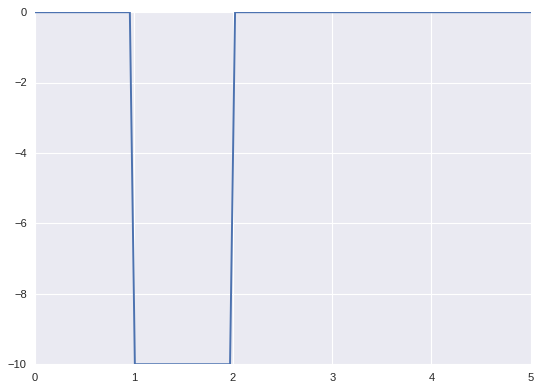

Universal Approximation
Table of Contents
1. Universal Approximation
Universal Approximation (通用逼近理论) 是指：如果一个前馈神经网络具有线性输出层和至少一层隐藏层，只要给予网络足够数量的神经元，便可以实现以足够高精度来逼近任意一个在 Rn 的紧子集 (Compact subset) 上的连续函数。
1.1. Sigmoid 做为激活函数
http://neuralnetworksanddeeplearning.com/chap4.html
import numpy as np
import matplotlib.pyplot as plt
plt.style.use("seaborn")
epsilon = 0.001
def sigmoid(x):
return 1. / (1. + np.exp(-x))
def bump_sigmoid(h, a, b):
x = np.linspace(0, 5, 100)
left = sigmoid(1 / epsilon * x - 1 / epsilon * a)
right = sigmoid(1 / epsilon * x - 1 / epsilon * b)
out = (left - right) * h
plt.plot(x, out)
bump_sigmoid(-10, 1, 2)
plt.show()

1.2. ReLU 做为激活函数
https://www.quora.com/Is-a-single-layered-ReLu-network-still-a-universal-approximator
def relu(x):
return np.maximum(0, x)
def bump_relu(h, a, b):
x = np.linspace(0, 5, 100)
plt.plot(
x, h / epsilon * (relu(x - a) - relu(x - a - epsilon) -
(relu(x - b) - relu(x - b - epsilon))))
bump_relu(10, 2, 4)
plt.show()

1.3. 线性函数无法做为激活函数
线性函数做为激活函数时, 最终输出必然还是 x,b 的线性组合
1.4. 函数能做为激活函数的条件
1.5. ANN 并不是万能
通用逼近理论的前提是逼近`连续函数`, 所以有些问题无法用 ANN 解决, 例如 \(f(x)=x\pmod{K}\)
import numpy as np
from torch.utils.data import Dataset, DataLoader
import torch
N_CLASSES = 2
model = torch.nn.Sequential(
torch.nn.Linear(1, 10), torch.nn.ReLU(), torch.nn.Linear(10, N_CLASSES))
class OddsAndEvenDataset(Dataset):
def __init__(self, low, high, size):
X = np.random.randint(low, high, size)
Y = X % N_CLASSES
self.X = torch.from_numpy(X).float().view(-1, 1)
self.Y = torch.from_numpy(Y).long().view(-1)
def __getitem__(self, index):
return self.X[index], self.Y[index]
def __len__(self):
return len(self.X)
training_set = OddsAndEvenDataset(0, 1000, 500)
training_loader = DataLoader(training_set, batch_size=100)
test_set = OddsAndEvenDataset(500, 2000, 500)
test_loader = DataLoader(test_set, batch_size=500)
# criterion = torch.nn.BCEWithLogitsLoss()
criterion = torch.nn.CrossEntropyLoss()
optimizer = torch.optim.Adam(model.parameters(), lr=1e-3)
def train():
model.train()
for i in range(1000):
for x, y in training_loader:
loss = criterion(model(x), y)
optimizer.zero_grad()
loss.backward()
optimizer.step()
# if i % 20 == 0:
print("loss:",loss.item())
def test():
model.eval()
for x, y in training_loader:
y_hat = model(x)
# y_hat = F.sigmoid(y_hat)
# y_hat = y_hat > 0.5
y_hat = torch.argmax(y_hat, dim=1)
accu = torch.sum(y_hat.byte() == y.byte()).item() / 100
print("train:", accu)
break
for x, y in test_loader:
y_hat = model(x)
# y_hat = F.sigmoid(y_hat)
# y_hat = y_hat > 0.5
y_hat = torch.argmax(y_hat, dim=1)
accu = torch.sum(y_hat.byte() == y.byte()).item() / 500
print("test:", accu)
train()
test()
loss: 0.6905694007873535 train: 0.47 test: 0.536